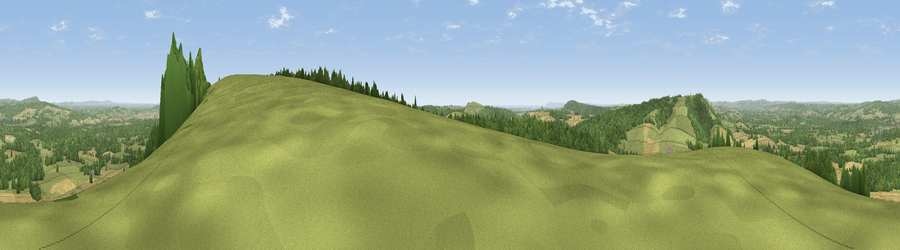

Viewpoint near Cocking
#1428 in England · top 4% of its area beats it · near CockingThe view, rendered

A 360° render of this exact spot computed from the terrain model, tree cover and land cover — summer colours, afternoon light, calibrated against photographs of famous viewpoints. Real trees, hedges and buildings will differ in detail.
The panorama
Grey silhouette: terrain skyline in each direction (720 bearings, Earth curvature and refraction included). Dashed green: skyline with trees (+15 m) and buildings (+8 m) as obstacles. Blue strip: how far the ground is visible on each bearing.
Where the view opens
Wedge length = distance to the farthest visible ground on that bearing (vegetation-aware). Rings at 10, 25 and 50 km.
What fills the view
35% woodland · 34% cropland · 30% grassland ·
Angular shares of the visible panorama (visual magnitude), not map area. Landscape diversity 0.50 (0–1 Shannon).
Key numbers
More beautiful places nearby
The staircase of upgrades: each row has a higher view potential than everything closer. Driving times are estimates from straight-line distance, calibrated against real road routing — check an actual route before setting out.
| Place | Direction | Drive | Score |
|---|---|---|---|
| Linch Down | W · 4 km | ~9 min | 85.2 |
| Beacon Hill | WNW · 8 km | ~16 min | 85.8 |
| Chanctonbury Ring | ESE · 26 km | ~41 min | 87.0 |
| Viewpoint near St. Lawrence | SW · 52 km | ~74 min | 88.2 |
| Viewpoint near Niton | SW · 56 km | ~78 min | 89.2 |
| Viewpoint near West Bexington | WSW · 137 km | ~160 min | 89.5 |
| The Knoll | WSW · 138 km | ~161 min | 91.0 |
50.94361, -0.73973 · source: screening · position refined by local search. Computed location — check access rights before visiting.